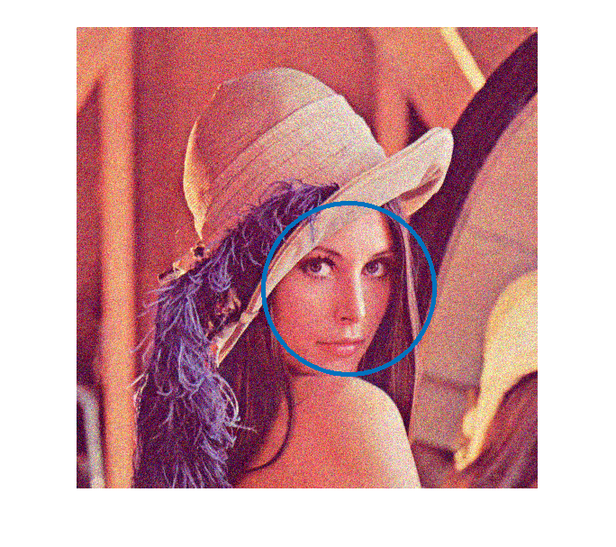

Smile Detection
This program demonstrates the smile detector.
NOTE: Smile intensity will only be valid after a first smile has been detected.
Sources:
Contents
Options
% this is the frontal face classifier cascadeName = fullfile(mexopencv.root(),'test','haarcascade_frontalface_alt.xml'); % this is the secondary smile classifier nestedCascadeName = fullfile(mexopencv.root(),'test','haarcascade_smile.xml'); % image scale greater or equal to 1, try 2.0 for example, % the larger the faster the processing scale = 1.0; % attempts detection of flipped image as well tryflip = false;
Initialize
% download XML files if missing download_classifier_xml(cascadeName); download_classifier_xml(nestedCascadeName); % load cacade classifiers cascade = cv.CascadeClassifier(cascadeName); assert(~cascade.empty(), 'Could not load face cascade'); nestedCascade = cv.CascadeClassifier(nestedCascadeName); assert(~nestedCascade.empty(), 'Could not load smile cascade'); scale = max(scale, 1.0);
Main loop
(either video feed or a still image)
if false % read an image frame = cv.imread(fullfile(mexopencv.root(),'test','lena.jpg'), 'Color',true); % detect faces/eyes and draw detections frame = detectAndDraw(frame, cascade, nestedCascade, scale, tryflip); imshow(frame); else % prepare video input cap = createVideoCapture([], 'lena'); pause(1); assert(cap.isOpened(), 'Failed to initialize camera capture'); % prepare figure frame = cap.read(); assert(~isempty(frame), 'Failed to read frame'); hImg = imshow(frame); % video feed while ishghandle(hImg) % read frame frame = cap.read(); if isempty(frame), break; end % detect faces/eyes and draw detections frame = detectAndDraw(frame, cascade, nestedCascade, scale, tryflip); % update set(hImg, 'CData',frame); drawnow; end cap.release(); end
Process function
function img = detectAndDraw(img, cascadeF, cascadeS, scale, tryflip) % smile min/max neighbors persistent minNB maxNB; % downscale image and preprocess it fx = 1/scale; gray = cv.cvtColor(img, 'RGB2GRAY'); gray = cv.resize(gray, fx, fx); gray = cv.equalizeHist(gray); [h,w] = size(gray); % detection options detectOpts = { 'ScaleFactor',1.1, ... 'MinNeighbors',2, ... ... 'FindBiggestObject',true, ... ... 'DoRoughSearch',true, ... 'ScaleImage',true, ... 'MinSize',[30 30] }; % detect faces tic faces = cascadeF.detect(gray, detectOpts{:}); if tryflip faces2 = cascadeF.detect(cv.flip(gray, 1), detectOpts{:}); faces2 = cellfun(@(r) [w-r(1)-r(3) r(2:4)], faces2, 'Uniform',false); faces = [faces(:); faces2(:)]; end toc % draw clrs = uint8(255 * lines(7)); for i=1:numel(faces) r = faces{i}; ii = mod(i-1, size(clrs,1)) + 1; drawOpts = {'Color',clrs(ii,:), 'Thickness',3}; % draw faces aspect_ratio = r(3)/r(4); if 0.75 < aspect_ratio && aspect_ratio < 1.3 center = round((r(1:2) + r(3:4)*0.5) * scale); radius = round((r(3) + r(4)) * 0.25*scale); img = cv.circle(img, center, radius, drawOpts{:}); else pt1 = round(r(1:2) * scale); pt2 = round((r(1:2) + r(3:4) - 1) * scale); img = cv.rectangle(img, pt1, pt2, drawOpts{:}); end % detect nested objects (smile) in lower half of face half_height = round(r(4)/2); r(2) = r(2) + half_height; r(4) = half_height - 1; if false && mexopencv.require('images') grayROI = imcrop(gray, [r(1:2)+1 r(3:4)]); else grayROI = cv.Rect.crop(gray, r); end nestedObjs = cascadeS.detect(grayROI, ... 'ScaleFactor',1.1, ... 'MinNeighbors',0, ... ... 'FindBiggestObject',true, ... ... 'DoRoughSearch',true, ... ... 'DoCannyPruning',true, ... 'ScaleImage',true, ... 'MinSize',[30 30]); % The number of detected neighbors depends on image size (and also % illumination, etc.). The following steps use a floating minimum % and maximum of neighbors. Intensity thus estimated will be accurate % only after a first smile has been displayed by the user. smileNB = numel(nestedObjs); if isempty(minNB) minNB = smileNB; maxNB = smileNB; end maxNB = max(maxNB, smileNB); % draw rectangle bar on left side of image reflecting smile intensity intensity = (smileNB - minNB) / (maxNB - minNB + 1); h_rect = round(h * intensity); clr = round([255 * intensity, 0, 0]); img = cv.rectangle(img, [0 h], [round(w/10) h-h_rect], ... 'Color',clr, 'Thickness','Filled'); end end
Elapsed time is 0.075507 seconds. Elapsed time is 0.056394 seconds. Elapsed time is 0.059050 seconds. Elapsed time is 0.058014 seconds. Elapsed time is 0.062390 seconds. Elapsed time is 0.058634 seconds. Elapsed time is 0.054683 seconds. Elapsed time is 0.054191 seconds. Elapsed time is 0.053590 seconds. Elapsed time is 0.056938 seconds. Elapsed time is 0.061333 seconds. Elapsed time is 0.059133 seconds. Elapsed time is 0.053069 seconds. Elapsed time is 0.059209 seconds. Elapsed time is 0.058121 seconds. Elapsed time is 0.056840 seconds. Elapsed time is 0.059636 seconds. Elapsed time is 0.056073 seconds. Elapsed time is 0.058268 seconds. Elapsed time is 0.055052 seconds. Elapsed time is 0.056169 seconds. Elapsed time is 0.054429 seconds. Elapsed time is 0.054508 seconds. Elapsed time is 0.054266 seconds. Elapsed time is 0.053605 seconds. Elapsed time is 0.054506 seconds. Elapsed time is 0.054681 seconds. Elapsed time is 0.054852 seconds. Elapsed time is 0.055301 seconds. Elapsed time is 0.060512 seconds. Elapsed time is 0.053368 seconds. Elapsed time is 0.055298 seconds. Elapsed time is 0.054175 seconds. Elapsed time is 0.055073 seconds. Elapsed time is 0.054710 seconds. Elapsed time is 0.054834 seconds. Elapsed time is 0.053693 seconds. Elapsed time is 0.053870 seconds. Elapsed time is 0.054673 seconds. Elapsed time is 0.054641 seconds. Elapsed time is 0.054990 seconds. Elapsed time is 0.054420 seconds. Elapsed time is 0.053657 seconds. Elapsed time is 0.054728 seconds. Elapsed time is 0.054503 seconds. Elapsed time is 0.053485 seconds. Elapsed time is 0.053717 seconds. Elapsed time is 0.053619 seconds. Elapsed time is 0.054895 seconds. Elapsed time is 0.054330 seconds.
Helper function
function download_classifier_xml(fname) if exist(fname, 'file') ~= 2 % attempt to download trained Haar/LBP/HOG classifier from Github url = 'https://cdn.rawgit.com/opencv/opencv/3.2.0/data/'; [~, f, ext] = fileparts(fname); if strncmpi(f, 'haarcascade_', length('haarcascade_')) url = [url, 'haarcascades/']; elseif strncmpi(f, 'lbpcascade_', length('lbpcascade_')) url = [url, 'lbpcascades/']; elseif strncmpi(f, 'hogcascade_', length('hogcascade_')) url = [url, 'hogcascades/']; else error('File not found'); end fprintf('Downloading cascade classifier "%s"...\n', [f ext]); url = [url f ext]; urlwrite(url, fname); end end